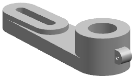
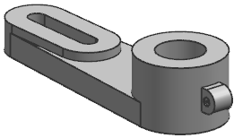
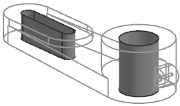
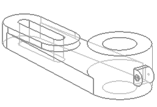
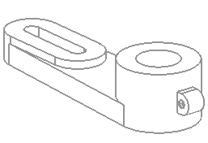
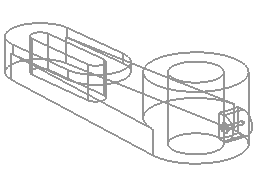
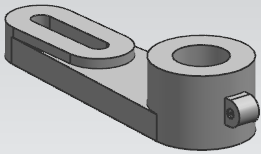

渲染样式设置
着色
使用着色 渲染样式，将会使用光顺着色来渲染面 。
渲染样式，将会使用光顺着色来渲染面 。

带边着色 也是使用光顺颜色渲染面，但视图中将包含边几何体的显示。
也是使用光顺颜色渲染面，但视图中将包含边几何体的显示。

在局部着色渲染样式中，选定的面对象将显示为小平面几何体，并使用光顺颜色渲染，剩下的面对象显示为边几何体。

线框
带有淡化边的线框 将只使用边几何体显示对象，隐藏的边淡化显示，并在视图旋转时动态更新。
将只使用边几何体显示对象，隐藏的边淡化显示，并在视图旋转时动态更新。

带有隐藏边的线框 将只显示可见的边，所有隐藏的边都将不可见。
将只显示可见的边，所有隐藏的边都将不可见。

静态线框 将把对象作为边几何体显示，它与线框渲染样式的区别在于隐藏边和轮廓在旋转时不会自动更新，所有您要在旋转之后更新显示。
将把对象作为边几何体显示，它与线框渲染样式的区别在于隐藏边和轮廓在旋转时不会自动更新，所有您要在旋转之后更新显示。

艺术外观
使用艺术外观 渲染样式时，将会根据赋予的材料、纹理以及照明布置，逼真地显示面。
渲染样式时，将会根据赋予的材料、纹理以及照明布置，逼真地显示面。

面分析
面分析将在选定面上显示表面分析数据，剩下的面只显示边几何体。